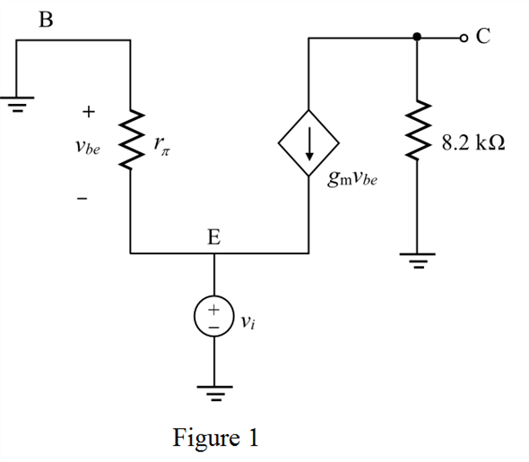

Step 1:
Refer to the Figure P6.95 in the text book.
It is known that, when  is very high, .
is very high, .
Determine the value of collector current.
Substitute 1 for  and 0.5 mA for
and 0.5 mA for  .
.
Determine the value of collector voltage.
Substitute 5 V for , 0.5 mA for
, 0.5 mA for  and for
and for  .
.
Therefore, the value of collector voltage is .
Step 2:
Draw the simplified hybrid model of the circuit as shown in Figure 1.

Step 3:
Determine the value of transconductance  .
.

Substitute 0.5 mA for  and 25 mV for
and 25 mV for  .
.
Therefore, the value of transconductance is.
Step 4:
From Figure 1, it is observed that , the output voltage  is found from
is found from
The collector voltage  is,
is,
Substitute for  .
.
Therefore, the value of voltage gain is.